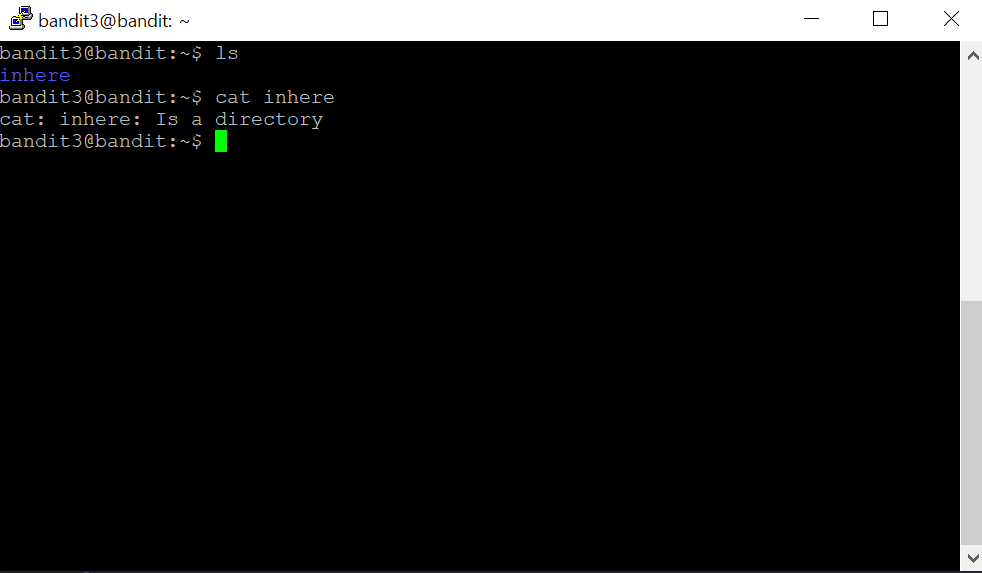

문제를 보면, 다음 단계를 위한 패스워드는 inhere라는 디렉토리(?)에 있다고 하네요.
그냥 cat으로 읽으면 되지 않을까요?

어라? 이건 디렉토리라서 안된다고??? 디렉토리는 다르게 열어야 하나?
검색을 한 번 해보자
저기에 How to open and close directories in the Linux terminal이라는 게 있네.
한 번 들어가 볼까>
아하 cd라는 명령어를 통해서 디렉토리를 바꿀 수 있구나!
그러면 cd inhere 라고 하면 내 디렉토리가 inhere로 바뀌겠네?
한 번 해보자!
흠......뭐가 되긴 된건가...? 뭔가 바뀌긴 했는데......
일단 이 디렉토리 안에 패스워드가 있다고 하니깐 여기서 ls라도 해볼까?
뭐야 왜 안보여?.......아하!!!
이 디렉토리 안에 숨겨져있다고 했으니까
ls -a하면 나오지 않을까?
.hidden이라는 파일이 있네? 저기 안에 패스워드가 있지 않을까?
cat으로 열어봐야겠다.
찾았다!!!!!